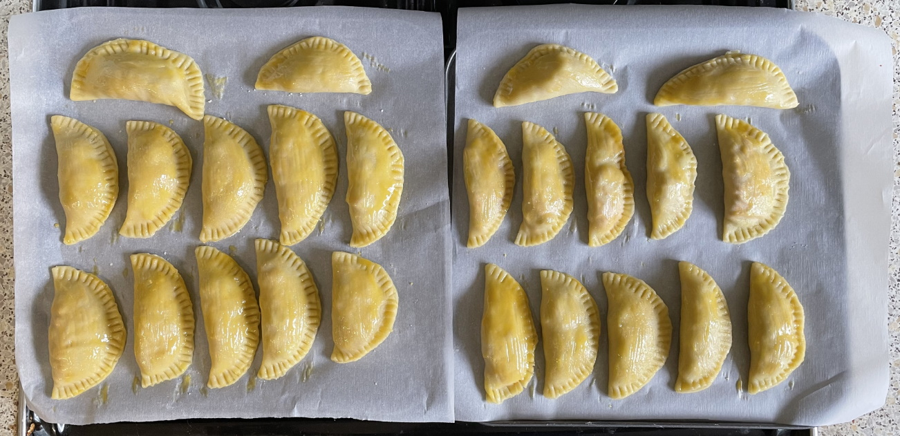

Tuna empanadas
Filling
- Fry until soft
- Add 1 tin chopped tomatoes and cook over medium heat until liquid disappeared
- Add, mix well, warm then leave to cool
- 1 roasted chopped red pepper
- 100g drained weight tuna
- 14 green/black olives
- 2 tbsp chopped parsely
Pastry
- Mix in bowl
- 125ml olive oil (114g)
- 125ml warm water
- ½ tsp salt
- Gradually work in 375g plain flour in make dough that does not stick, start with fork
then use
hands
- Knead briefly
Pies
- Beat 2 egg yolks
- Divide dough into 6 pieces
- Roll out thin and cut 10cm circles with pastry cutter (dough is oily so don't need more flour)
- Fill each circle with generous tsp of filling
- Paint edges with yolk to help pastry stick
- Fold over circle to make half-moon
- Seal edges with fork prongs
- Roll any offcuts into ball and cut more circles
- Place pies of baking paper
- Brush pies with egg yolk
- Bake in preheated oven at 180°C for 30 mins until golden
Serve with
Notes
- Makes about 24
- Make pastry while tomatoes are reducing, takes 20 mins
- Use Waitrose roasted red peppers in olive oil
- Use small tin of tuna
- Use pastry sticking to chopping board to maintain shape while filling
- Use egg whites for forgotten cookies
